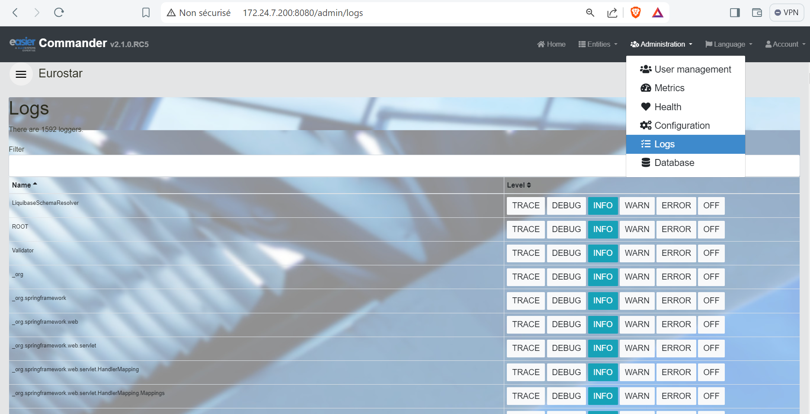
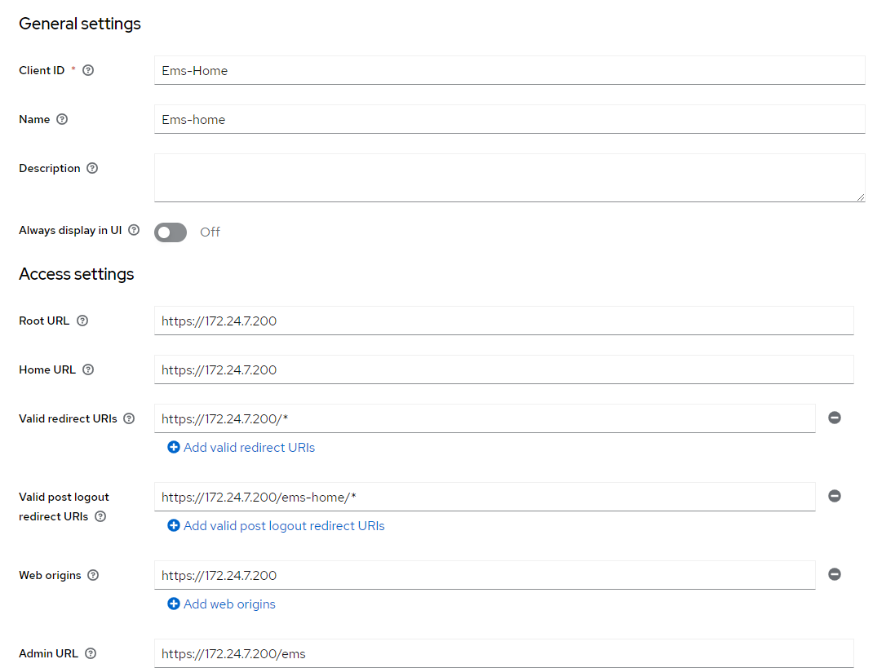
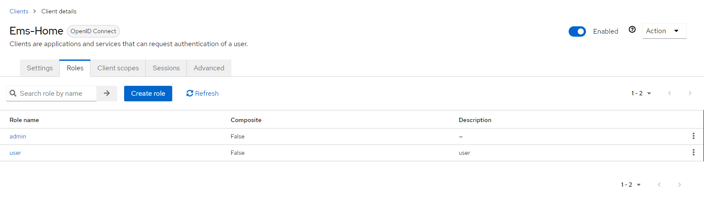

L'application EMS-Home a pour finalité de servir de point d'accès centralisé à plusieurs applications au sein d'un environnement d'entreprise. Elle permet aux utilisateurs de naviguer facilement entre différentes applications sans avoir à se réauthentifier à chaque fois, grâce à l'intégration d'un système d'authentification unique (Single Sign-On) via Keycloak.
EMS-Home résout plusieurs problèmes majeurs :
Pour cloner le dépôt contenant le code source de l'application EMS-HOME, vous pouvez utiliser la commande suivante :
git clone git@gitlab.ier.group:ems/internship/commanderui.git
L'application EMS-Home est accessible via l'URL suivante : https://172.24.7.200/ems-home.
Une fois sur la page d'accueil, vous êtes invité à vous connecter avec un compte EMS via le service d'authentification Keycloak.
Après une connexion réussie, vous êtes redirigé vers la page d'accueil de l'application EMS-Home. Sur cette page, vous pouvez accéder aux différentes applications disponibles telles que Commander et OpenSearch, selon la configuration.

En cliquant sur Commander, vous êtes redirigé vers cette application sans avoir besoin de vous reconnecter.

De la même manière, en cliquant sur OpenSearch, vous êtes redirigé vers cette application sans avoir besoin de vous reconnecter.

Sur la barre de navigation, un menu déroulant est disponible avec les options suivantes :

Vous pouvez voir les rôles de l'utilisateur actuel pour les différentes applications disponibles.

Pour vous déconnecter de toutes les applications, il suffit de vous déconnecter de EMS-Home. Cela déconnectera automatiquement toutes les autres applications.
L'application ems-home est développée avec Angular CLI et comprend plusieurs composants et services essentiels à son bon fonctionnement. L'un des services les plus cruciaux est Keycloak, qui assure la sécurité de l'application et permet la gestion du single sign-on (SSO).
Le service Keycloak est initialisé dans le KeycloakService via la fonction init(). Cette fonction récupère la configuration Keycloak à partir d'un service de configuration, puis initialise le client Keycloak avec les paramètres appropriés (URL, realm, clientId). Voici comment cette fonction est implémentée :
init() {
this.configService.getConfig().subscribe((data: any) => {
this.config = data.keycloak;
console.log("config:", this.config.clientId);
this._keycloak = new Keycloak({
url: this.config.url,
realm: this.config.realm,
clientId: this.config.clientId,
});
console.log('Keycloak initialization started', this.config);
this.loaderService.show();
this._keycloak.init({
onLoad: 'login-required',
}).then(async authenticated => {
if (authenticated) {
console.log('User authenticated successfully');
await this.loadProfile();
this._details = this._keycloak?.resourceAccess;
console.log('details:', this._details);
} else {
console.warn('User is not authenticated');
}
this._keycloakInitialized.next(true);
}).catch(initError => {
this._keycloakInitialized.next(true);
console.error('Keycloak initialization failed:', initError);
this.router.navigate(['/errorkeycloakinit']);
}).finally(() => {
console.log("Finalizing Keycloak initialization");
this.loaderService.hide();
this._keycloakInitialized.next(true);
});
});
}
Cette fonction d'initialisation est appelée dans le fichier app.config.ts afin de s'appliquer à toute l'application, garantissant que chaque accès nécessite une authentification via le service Keycloak.
import { APP_INITIALIZER, ApplicationConfig, importProvidersFrom } from '@angular/core';
import { provideRouter } from '@angular/router';
import { routes } from './app.routes';
import { HttpClientJsonpModule, HttpClientModule } from "@angular/common/http";
import { KeycloakService } from "./services/keycloak/keycloak.service";
import { ConfigService } from "./services/config/config.service";
export function kcFactory(kcService: KeycloakService) {
return () => kcService.init();
}
export const appConfig: ApplicationConfig = {
providers: [
ConfigService,
KeycloakService,
{
provide: APP_INITIALIZER,
useFactory: kcFactory,
deps: [KeycloakService],
multi: true
},
provideRouter(routes),
importProvidersFrom(HttpClientModule),
importProvidersFrom(HttpClientJsonpModule),
]
};
Lors de l'appel au service Keycloak, le client est automatiquement redirigé vers l'URL de Keycloak spécifiée avec le realm et le clientId déjà créés sur Keycloak. Voici les étapes de configuration dans Keycloak :
Création d'un client avec des configurations spécifiques pour l'application ems-home : 
Ajout de deux rôles pour le client ems-home : 
Application d'un thème personnalisé :

Configuration de l'interface de connexion multilingue :

L'application repose sur un fichier de configuration nommé config.json, qui contient toutes les configurations de démarrage, URL et autres paramètres essentiels.
{
"keycloak": {
"url": "https://172.24.7.200:8843", // URL du serveur Keycloak
"realm": "ems", // Nom du realm Keycloak
"clientId": "Ems-Home" // ID du client Keycloak
},
"home": {
"url": "https://172.24.7.200/ems-home/ems" // URL de la page d'accueil de l'application
},
"logout": {
"url": "https://172.24.7.200/ems-home/ems" // URL de déconnexion
},
"applications": [
{
"name": "commander",
"url": "https://172.24.7.200",
"label": "Commander",
"imageUrl": "./assets/images/commander.png" // URL de l'image du bouton Commander
},
{
"name": "opensearch",
"url": "https://172.24.7.200/dashboard",
"label": "OpenSearch",
"imageUrl": "./assets/images/opensearch.png" // URL de l'image du bouton OpenSearch
},
{
"name": "APPtest",
"url": "https://172.24.7.200/apptest",
"label": "AppTest",
"imageUrl": "./assets/images/no-images.jpg" // URL de l'image du bouton AppTest
}
]
}
Pour déployer l'application EMS-home sur le serveur, il faut d'abord générer l'image Docker de l'application.
## Utiliser l'image node:18 comme étape de construction
FROM node:18 as build-stage
# Définir le répertoire de travail
WORKDIR /app
# Copier les fichiers package.json et package-lock.json
COPY package*.json ./
# Installer les dépendances
RUN npm install
# Copier tous les fichiers de l'application
COPY . .
# Construire l'application pour la production
RUN npm run build --prod
# Utiliser l'image nginx:alpine comme étape finale
FROM nginx:alpine
# Copier la configuration nginx personnalisée
COPY nginx.conf /etc/nginx/nginx.conf
# Copier les fichiers construits depuis l'étape de construction
COPY --from=build-stage /app/dist/test3 /usr/share/nginx/html
# Exposer le port 8080
EXPOSE 8080
docker build -t easierrep/ems-home:latest .
docker push easierrep/ems-home:latest
docker pull easierrep/ems-home:latest
ems-home:
container_name: ems-home
restart: always
image: easierrep/ems-home:1.1.2
ports:
- "5500:8080"
networks:
- opensearch-net
volumes:
- ./ems-home-volumes/config:/usr/share/nginx/html/browser/assets/config
- ./ems-home-volumes/images:/usr/share/nginx/html/browser/assets/images
location /ems-home/ {
proxy_pass http://ems-home:8080/;
proxy_set_header Host $http_host;
sub_filter_types text/html;
sub_filter 'href="/' 'href="/ems-home/';
sub_filter 'src="/' 'src="/ems-home/';
sub_filter_once off;
}
cd /ems/ems_keycloak
docker compose up
Une fois que tous les services sont démarrés, l'application EMS-home sera accessible via HTTPS à l'adresse suivante : https://172.24.7.200/ems-home.